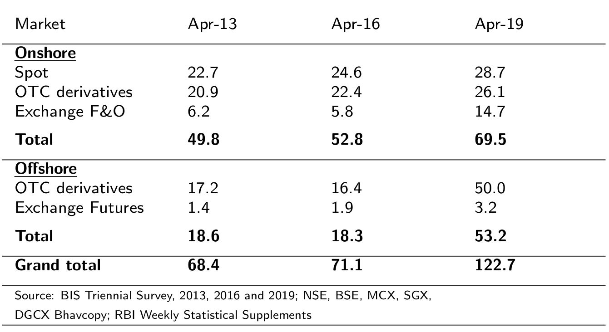
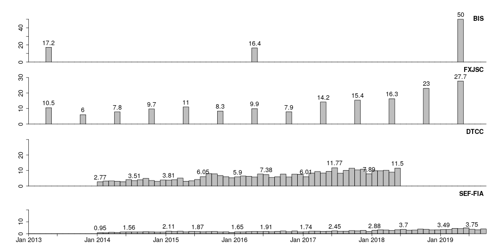

Written by the Finance Research Group (FRG) at IGIDR and commissioned by the City of London, this report highlights the significance of the rupee-denominated NDF markets. It utilises multiple sources to demonstrate that international interest in the Indian rupee has translated into sizeable offshore pools of rupee trading. Acknowledging the size and impact of the rupee NDF market has important policy implications for the financial sector reform process as well as for the competitiveness of the Indian financial sector.
| The report |
FRG-IGIDR March 2016 |
Estimates show that in 2019, around 43% of the USD 123 bn daily trading in the INR was taking place in offshore markets. At a 10 basis points commission, taking both sides of the trade into account, this implies that offshore markets earn a fee income of Rs.1,860.8 billion (USD 26.8 billion) per annum on this trading. This is revenue that the Indian markets would earn if they could attract this trading volume onshore. (average daily volume in USD billion)  |
(average daily volume in USD billion) 
BIS: Bank for International Settlements, Triennial Central Bank Survey |